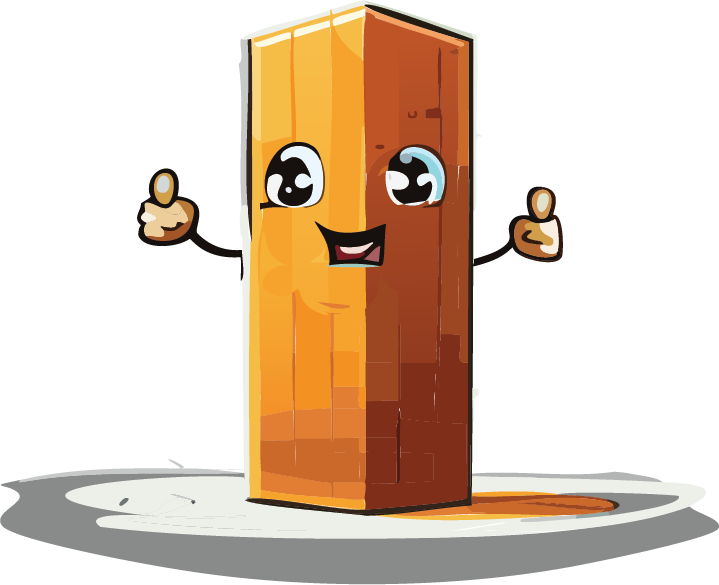

Group Members

- Get in touch with Fritz below!
- We are looking for postdocs, PhD students, and interns!

- 2016 BSc Biomedical Chemistry, JGU Mainz
- 2018 MSc Biomedical Chemistry, JGU Mainz
- 2022 PhD Chemistry, UC Santa Barbara
Friedrich Stricker is a chemist and materials scientist fascinated by how molecules can be coaxed into doing useful things. His research plays at the intersection of chemistry, soft matter, and responsive systems — designing materials that move, adapt, and even make decisions (sort of). Whether it’s a polymer that bends in sunlight or a material that juggles multiple states at once, the goal is to push the boundaries of what “stuff” can do. Before starting his lab at IST Austria, Friedrich trained at Harvard and UC Santa Barbara, diving deep into molecular switches, soft actuators, and dynamic materials.